<!-- .slide: class="title" --> # Cybersecurity <div class="inset"> ## Why choose a Cybersecurity career? ### Mike Cohen, Digital Paleontologist, Rapid7 ### University of Queensland, guest lecture, CYBR7001 </div> --- <!-- .slide: class="content" --> ## What this talk is about? * I have been in the cybersecurity field over 25 years * The field has changed and grown over time * It is a challenging field with important work! <div style="padding-top: 50px;"> * You will find this talk on * https://present.velocidex.com </div> --- <!-- .slide: class="content" --> ## What I hope you gain from this talk * This is a quick tour of my experience in Cybersecurity. * I hope this will spark your interest to pursue a career in Cybersecurity! * No two careers are the same! * Forge your own path. * No one knows where they will end up at the start of the journey * Enjoy the ride! --- <!-- .slide: class="content" --> ## Australian Signals Direcotorate (ASD) * Where I started! Graduate intake program (circa 2001). * Responsible for whole of government information security posture * Really a great place to start your carreer - so much to learn! * Very impactful and important work! --- <!-- .slide: class="content" --> ## Security policy and guidance * ASD helps set Government policy. * Helps departments implement secure systems. * Advises, assists and provides guidance. * [ASD Essential 8 Maturity Model](https://www.cyber.gov.au/resources-business-and-government/essential-cybersecurity/essential-eight) * ASD also has an incident response and reporting function. * [Report and coordinate](https://www.cyber.gov.au/report-and-recover/report) various law enforcement and government agencies. --- <!-- .slide: class="content" --> ## Compliance and certifications * 20 Years ago was the wild west! * Outsourcing was all the rage! * Today we have extensive frameworks: * [GDPR](https://gdpr.eu/) - enforces privacy guards with penalties!!! * [PCI](https://www.pcisecuritystandards.org/) - Required for CC data! * [HIPAA](https://www.cdc.gov/phlp/php/resources/health-insurance-portability-and-accountability-act-of-1996-hipaa.html) - Required for managing health data * [IRAP](https://www.cyber.gov.au/irap) - Certification for Aus Gov * Many professional auditors and consultants to enforce compliance. * Is it perfect? No... --- <!-- .slide: class="content" --> ## Security auditing of application code. * Back in early 2000's: * Everyone was speeding to deploy a web presence * Security was an afterthought in many cases * Low skill of developers * Languages were not robust enough - too easy to do the wrong thing. * Really fun to break applications! --- <!-- .slide: class="content" --> ## Software vulnerabilities Common vulnerabilities include [SQL Injection](https://pentest-tools.com/blog/sql-injection-attacks) * This vulnerability leads to complete server take over 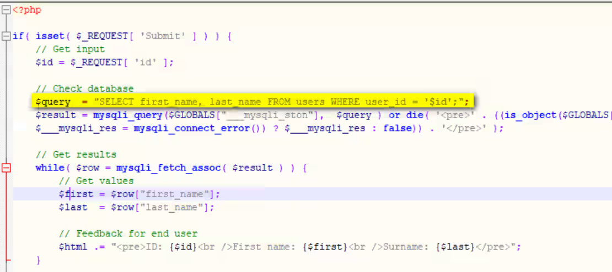 --- <!-- .slide: class="content" --> ## Impact of software vulnerability ### In early 2000s * When a security vulnerability was exploited: * It was usually a teenager or student just playing around * Often they tried to embarrass the agency or government department * Media jumped on the "incompetence of government" * Generally not a huge impact * backup, restore, rebuild! --- <!-- .slide: class="full_screen_diagram" --> ## Today: Not messing around 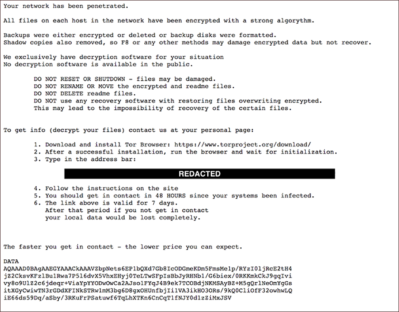 --- <!-- .slide: class="full_screen_diagram" --> ## Ransomware Negotiators 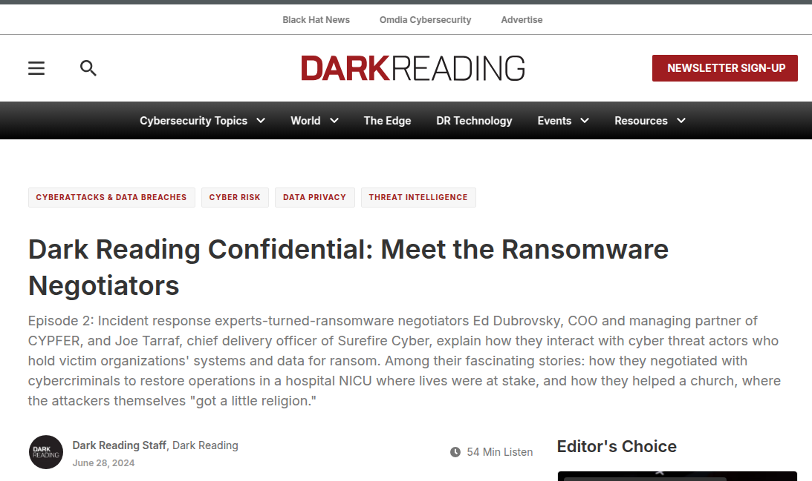 https://www.darkreading.com/cyberattacks-data-breaches/meet-the-ransomware-negotiators --- <!-- .slide: class="full_screen_diagram" --> ## Impact of software vulnerabilities today 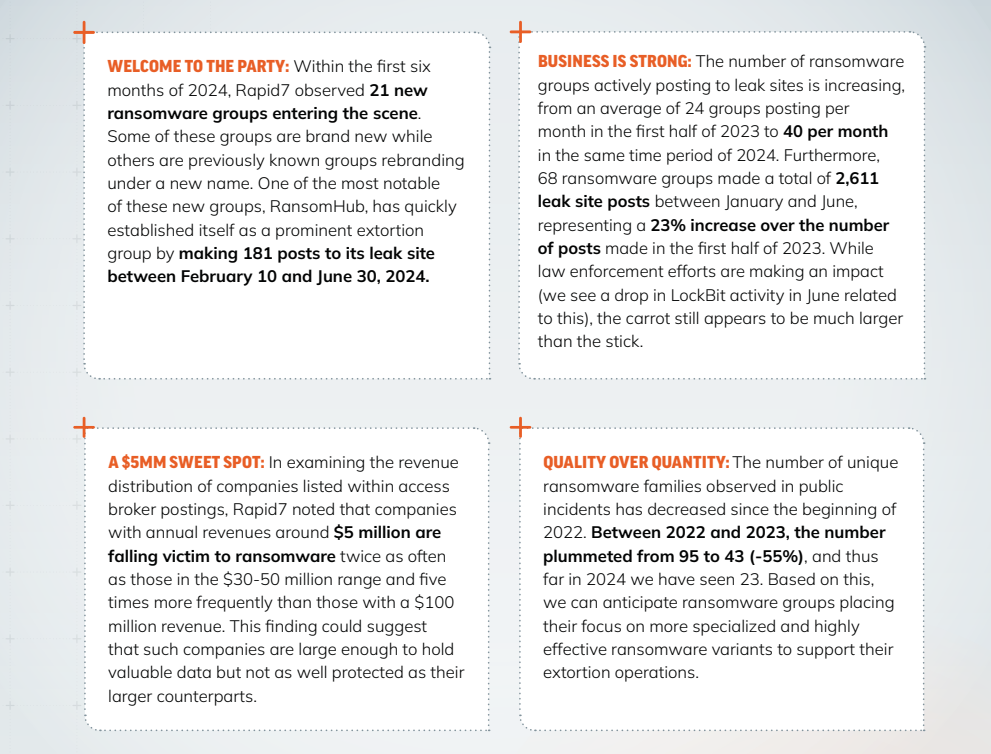 https://www.rapid7.com/globalassets/_pdfs/2024-rapid7-ransomware-radar-report-final.pdf --- <!-- .slide: class="full_screen_diagram" --> ## Impact of software vulnerability today * Such a vulnerability **will** result in a ransomware attack. 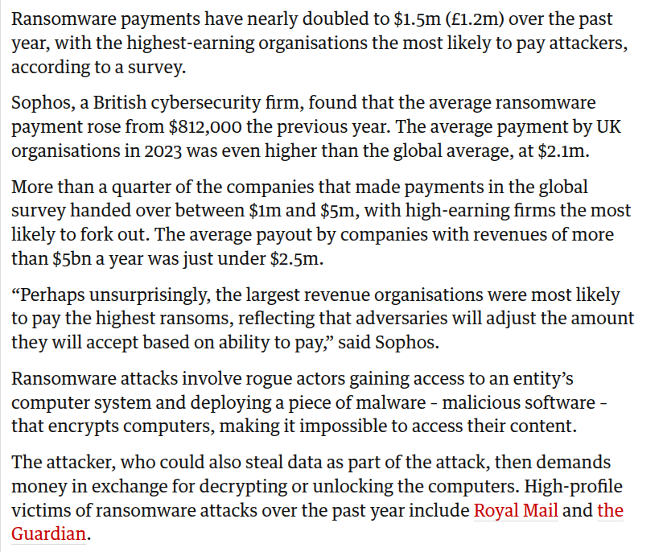 https://www.theguardian.com/technology/2023/may/10/ransomware-payments-nearly-double-in-one-year --- <!-- .slide: class="content" --> ## Law enforcement * The field of Digital Forensics was just getting started in early 2000's * Today most cases involve an element of Digital Forensics: * Computers * Phones * Cars * Watches and health data * Surveillance * Game consoles --- <!-- .slide: class="content" --> ## A hacking case from 2006 <a href="nat_060322internetarrest.pdf">  <a> --- <!-- .slide: class="content" --> ## A hacking case... <a href="nat_060322internetarrest.pdf">  <a> --- <!-- .slide: class="content" --> ## A hacking case... * A complex case consisting of * Manual investigation of multiple server drives. * Compromises over a couple of years * Images shipped from multiple countries. * Arrest made of 22yo University Student * Outcome was no conviction recorded * let off with a warning: motive was curiosity and desire to learn computer security. * Really good exercise for all involved! * Best practice evidence collection, chain of custody etc! --- <!-- .slide: class="content" --> ## Law Enforcement challenges * Modern criminals are highly aware of information security! * Software has gotten a lot more secure * Sometimes new and innovative solutions are required * Legislation to provide access is sometimes at odds with privacy * End to End Encryption vs Law enforcement access * US [Fifth amendment](https://constitution.congress.gov/constitution/amendment-5/) vs Australia's [Section 3LA](https://www5.austlii.edu.au/au/legis/cth/consol_act/ca191482/s3la.html) --- <!-- .slide: class="content" --> ## Operation Ironside  --- <!-- .slide: class="content" --> ## Corporate Information Security * Companies operate business critical information systems. * An information security incident can destroy companies in an instant! * Ransomware * Insider threats * IP leaks * Privacy breaches (PII) can result in fines and loss of confidence * Business Email Compromise (BEC) --- <!-- .slide: class="content" --> ## Business Email Compromise (BEC) * [BEC](https://www.cyber.gov.au/threats/types-threats/business-email-compromise) is very common, and extremely hard to combat. * Can affect companies big and small. * Also affecting * Property transactions * Large transfers etc --- <!-- .slide: class="full_screen_diagram" --> ## Inoteq vs Mobius Group <a href="https://www.abc.net.au/news/2025-01-16/court-orders-inoteq-to-pay-190k-after-fraudulent-invoice/104783454"> 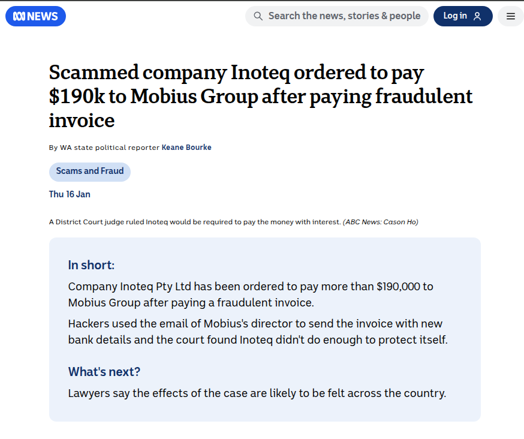 </a> https://www.abc.net.au/news/2025-01-16/court-orders-inoteq-to-pay-190k-after-fraudulent-invoice/104783454 --- <!-- .slide: class="full_screen_diagram" --> ## Inoteq vs Mobius Group <a href="https://www.abc.net.au/news/2025-01-16/court-orders-inoteq-to-pay-190k-after-fraudulent-invoice/104783454"> 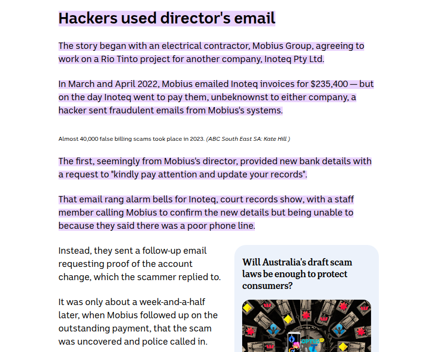 </a> --- <!-- .slide: class="full_screen_diagram" --> ## Business Email Compromise (BEC) 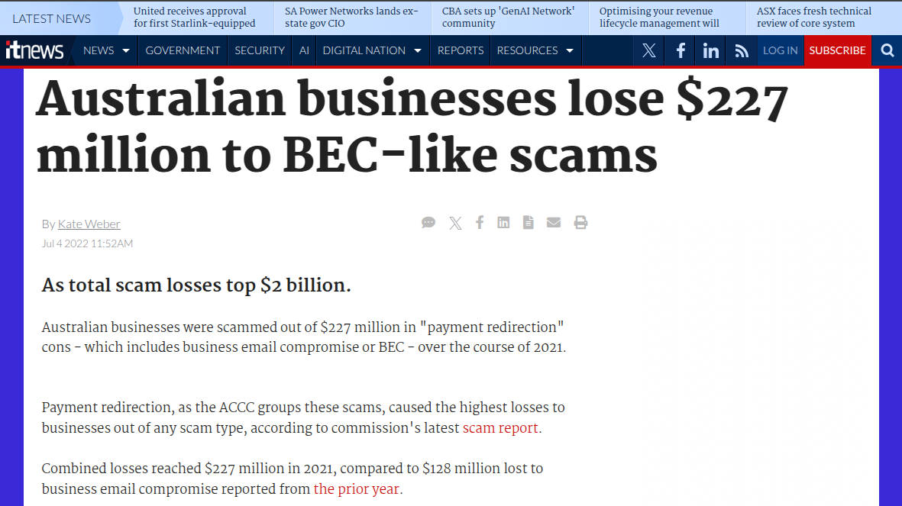 https://www.itnews.com.au/news/australian-businesses-lose-227-million-to-bec-like-scams-582162 --- <!-- .slide: class="full_screen_diagram" --> <a href="https://www.smartcompany.com.au/technology/business-email-hacks-undetected-11-days-average/">  </a> https://www.smartcompany.com.au/technology/business-email-hacks-undetected-11-days-average/ --- <!-- .slide: class="content" --> ## Incident Response - Blue team * When a security breach occurs - Time is of the essence! * Attacks typically follow the [Cyber Kill Chain](https://www.lockheedmartin.com/en-us/capabilities/cyber/cyber-kill-chain.html): * Installation or compromise * Command and Control (C2) * Actions on objectives - i.e. Data exfiltration or encryption. * Dwell time is the time between initial compromise and objective. --- <!-- .slide: class="content" --> ## Dwell time is getting shorter 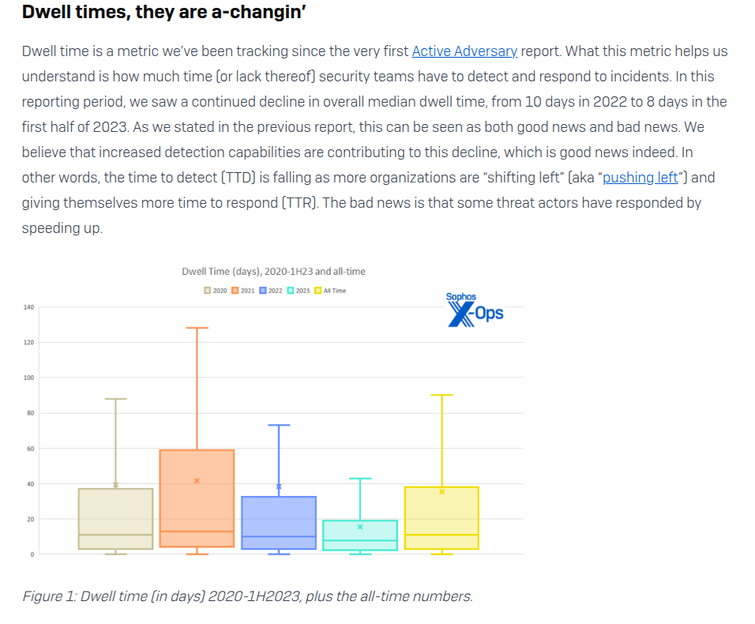 <div class="ref"> https://news.sophos.com/en-us/2023/08/23/active-adversary-for-tech-leaders/ </div> --- <!-- .slide: class="content" --> ## Security Operation Center (SOC) > A SOC is a centralized function or team responsible for improving an > organization’s cybersecurity posture and preventing, detecting, and > responding to threats. <div class="ref"> https://www.microsoft.com/en-us/security/business/security-101/what-is-a-security-operations-center-soc </div> --- <!-- .slide: class="full_screen_diagram" --> ## Security Operation Center (SOC) 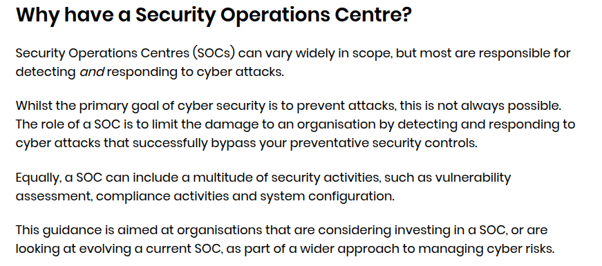 <div class="ref"> https://www.ncsc.gov.uk/collection/building-a-security-operations-centre </div> --- <!-- .slide: class="full_screen_diagram" --> ### What is Detection Engineering? 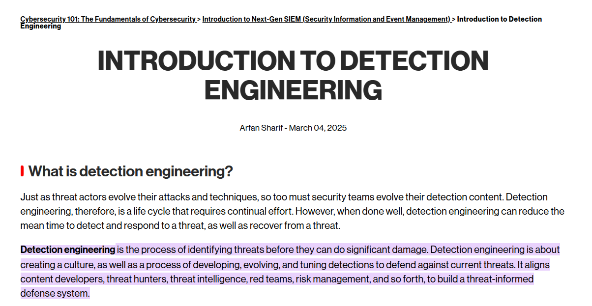 <div class="ref"> https://www.crowdstrike.com/en-us/cybersecurity-101/next-gen-siem/detection-engineering/ </div> --- <!-- .slide: class="content" --> ## What is Detection Engineering? * Requires low level understanding of attack cycles * Combines many fields: * Digital Forensics * Writing detection rules * Replicating attack methods * Tuning and refining --- <!-- .slide: class="content" --> ## Security auditing: Red teams * Perform simulated attacks against an organization * Test forensic readiness * Test application security * Test Incident Response * Reporting security weaknesses to C level execs! --- <!-- .slide: class="full_screen_diagram" --> ## Security auditing: Red teams 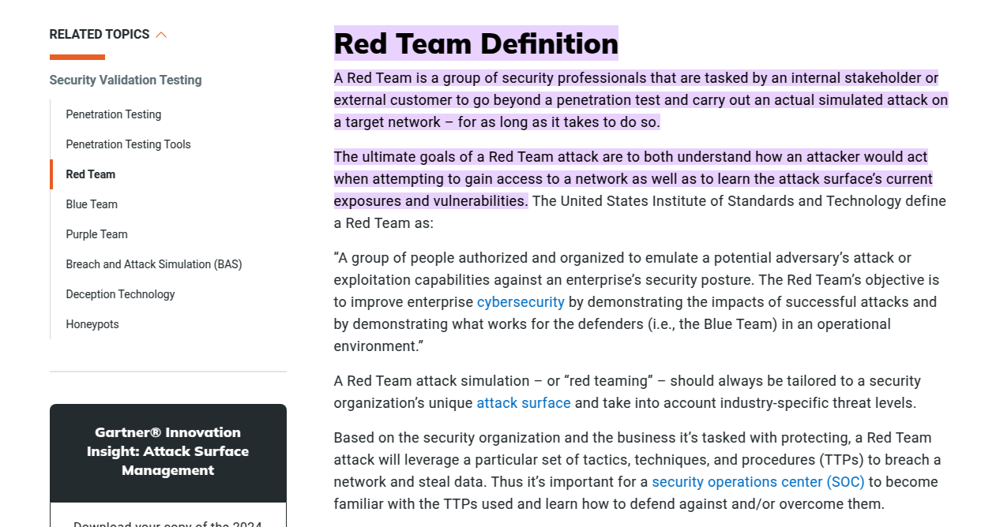 https://rapid7.com/fundamentals/what-is-a-red-team/ --- <!-- .slide: class="content" --> ## Software development ### Security industry * All software developers must have a strong grounding in information security! * Developing security specific software needs a working knowledge of: * Detection Engineering * Low level OS internals - gather telemetry * High performance computing - scaling up! * Large Data analytics * Cloud technologies --- <!-- .slide: class="content" --> ## Software development ### Security industry * Many companies require * Custom solutions * Integration with existing systems * Streamline SOC operations * Enhance logging and auditing from custom systems * Tuning and automating --- <!-- .slide: class="content" --> ## Cybersecurity as a career * Information Security is a huge field! * Over the years it has evolved * There is something for everyone! * In your career you will likely move between specializations. * Every day is a new challenge * Bootstrap your career anywhere! * Help desk * Government graduate intake programs. * Always be the person in the room who is least experienced! --- <!-- .slide: class="full_screen_diagram" --> ### Always be learning! 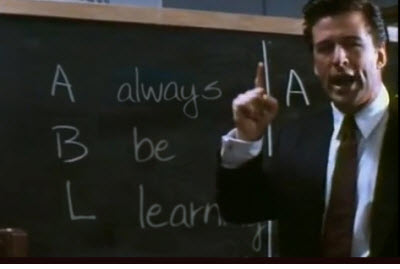